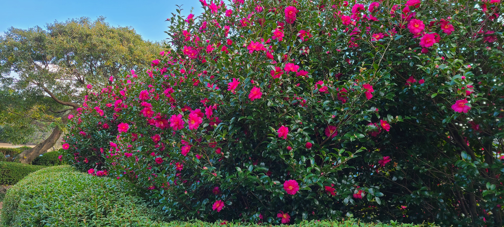
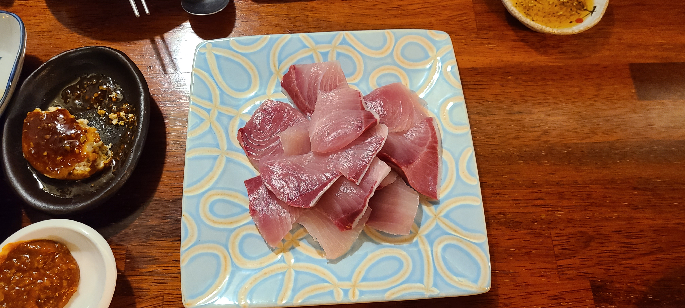
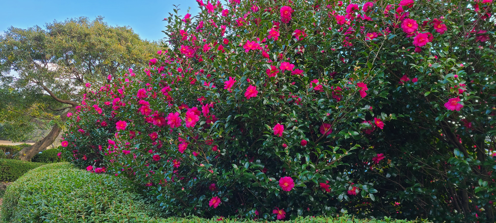
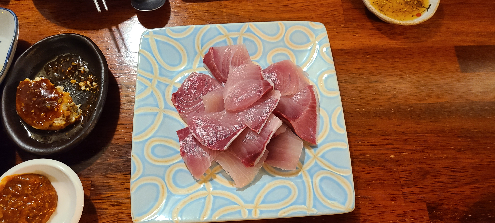

제주도 여행
일상으로 부터의 탈출일정 : 2020년 11월(23~26일)의 휴가
비수기를 이용하여 경제적인 여행을 계획하고 코로나19 유행을 감안하여 자유 일정으로 여행
3박4일 일정으로 한라산 백록담을 목표로 일정을 잡았다(부부(60대)함께 갈수 있을때 도전 함)첫번째 일정(▶Gallery)
제주 공항에 도착하자 마자 렌터카를 수령하여 우리나라 최 남단의 섬 마라도로 가기위해 출발하여 송악산에 도착하여 시간이 여유가 있어 송악산 둘레길을 함바퀴 돌아봄.
송악산 선착장에서 배를 타고 마라도로 들어감
"짜장면 시키신분"(광고)로 유명한 짜장면 집에서 짜장면, 짬뽕, 해산물을 시켜 먹고 마라도 한바퀴 돌아보고 다시 제주도 로 돌아옴
배편은 왕복으로 점심시간때 에는 2시간 10분 정도의 시간이 있었다, 빠른걸음으로 30분 정도면 돌아 볼수 있으니 천천히 사진도 찍으면서 돌아보면 될것같다
제주에 돌아와서 카멜리아힐 로 가서 동백을 감상하였다. 저녁에는 방어철이라 예약해 놓은 방어집에서 호사를 누렸다.

 



두번째 일정(▶Gallery)
여행의 주요목적인 한라산 백록담을 등정하였다. 등산통제 시간이 있어 아침일찍 출발, 비기조금와서 일정변경을 고려하였으니 도착하고 보니 비도 그치고 벌써 많은 인파가 어둠속에 출발하고 있었다.
백록담 등산코스른 관암사 방향과 성판악 코스가 있었으나 평이한 코스인 상판악코스를 선택하였다
무사히 백록담에 올라 줄서서 인증사진을 찍고 준비한 김밥과 컵라면으로 점심을 먹었다
내려오는 도중에 욕심내어 사라오름도 갔다가 왔다, 갈때는 힘들어 보였지만 조금만 오르니 금방 분화구가 나왔다. 물은 많이 없었지만 제주도 분화구중 물이 있는 몇안되는 분화구중의 하나라고 한다. 노루도 출현한다고 하나 노루는 보지 못했다
피곤하여 숙소로 직행하여 숙소근처에서 비빔밥으로 저녁을 간단히 해결하였다.
백록담
줄서서 인증사진 먼저찍기 바빠서
백록담 구경은 나중일세
위에서 아래로 보니 백록담이 보이네
애개 물이 아주조금
그래도 이기쁨을 표현할길 없네
오늘 이 기쁜 하루 즐기고 즐기네
세번째 일정(▶Gallery)
미리예약한 거문오름에 도착 전날 한라산 백록담 등정의 피로에 1,2,3코스중 2코스를 돌기도 예정하고 막상2코스에 가서는 3코스를 도전하고 있었다
세계자연유산으로 소중한 이곳을 간직하기위해 물을 제외한 음식물은 반입이 금지된다
다음 일정으로 점심을 먹기위해 맛집으로 이동하였으나 아쉽게도 오늘 휴무일이 어서 근처에서 갈치 조림으로 식사하고 비자림으로 이동하여 아름다운 비자림을 보고
이중섭거리로 이동 전시관과 거리를 둘러보고 근처에 있는 올레시장을 구경하고 이중섭거리로 와서 성게 미역국을 먹었다
네번째 일정(▶Gallery)
하루 자유일정으로 비가 오고 있어 오설록 티뮤지엄으로 녹차 밭구경을 하였다 맛있는 녹차 아이스크림과 롤케익, 녹차롤 먹고 녹차도 좀사고 녹차밭도 구경하였다
약천사에 들러 귤나무에 어우러진 웅장한 규모 놀라고 소원빌고 시원한 바다와 어우러진 풍경도 보고 근처 맛집 찻아서 소소한 맛을 즐겼다
해안도로 여기저기 거쳐서 협재해수욕장, 이테호우 해수욕장, 용두암을 구경하고 용두암 주변 야경도 보고 저녁을 먹고 대구로 복귀
3박 4일의 빡빡한 일정이었지만 백록담과 마라도 여행등 즐거운 일정이었다
Fun
재미롭거나 인상적인 것
최남단 마라도
마라도 지도모형
귤과 절
절주변이 제주도 답게 귤나무에 귤이 주렁주렁
방사탑
액운을 막기위해 세운 민속자료
이중섭거리
보도블럭에 은지화를 새겨 넣었네